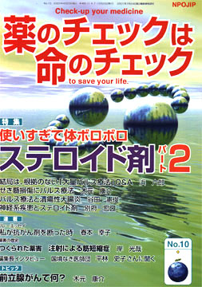

No.10 特集 ステロイド剤パート２ 2003年10月 第2刷発行
 ステロイド剤 危険な大量パルス療法
前回は、「必須薬」でしかも「ゴールデンピル」としてのステロイド、「ジキル／ハイド」としてのステロイドについてくわしく述べました。
今回は、日本でとくに盛んに行われている「ステロイド・パルス療法」について考えてみたいと思います。
今、「自分には関係ない」と思っている方も、いつ、医師から「ステロイド・パルス療法をしましょう」と言われるかわかりません。だから、多くの人に知っておいてほしいのです。もしものときに、少しでも頭に知識としてあると冷静な対処ができるかもしれません。
病気が悪化し重症になったとき、日本では、しばしば「ステロイド・パルス療法」が行われているからです。しかも何の根拠もなく。
もくじ
■海外からのメッセージ
ヴォルフガング・ベッカーブリューザー氏 （アルツナイ・テレグラム編集長、ドイツ）
特集
■結局は、根拠のない「大量パルス療法」Q&A
■せき髄損傷にパルス療法
■ステロイド・パルス療法と潰瘍性大腸炎
■神経系疾患とステロイド剤
■ステロイド外用剤の強さと部位別吸収率
■主な外皮用剤の強さと識別コード一覧
■ステロイド外用剤について／薬の説明書の読み方
■患者のための薬の説明書（NPOJIPの判定付き）
・プレドニゾロン（経口）
・ヒドロコルチゾン（経口）
・ヒドロコルチゾン（注射）
連載
■映画の中のクスリ 番外編
映画に出てくるせき髄損傷患者
■新薬承認のカラクリ
抗肺がん剤イレッサ
■みんなのやさしい生命倫理 １０
日本の生命倫理の歴史（３） 鎌倉・室町時代
■リレーエッセイ 私が抗がん剤を断った時
■薬害の歴史（6）
つくられた薬害 注射による筋短縮症
■編集長インタビュー
平林史子さんに聞く 国境なき医師団と必須薬キャンペーン
トピック
■前立腺がんって何？
提言
■NPOJIPの提言 イレッサ薬害
■読者の声
・「よかった、ステロイド剤特集」
・「医学・薬害教育に本書を」
・「イレッサが効く患者もいるのでは？」 など
■書評
・『がんはなぜ問題視されるのか』
・『まちがいだらけの予防接種』
■NPOJIPおよび関連の出版物案内
■出版書籍申込み用紙
■編集後記
私が抗がん剤を断った時
春本幸子 （医療ソーシャルワーカー、兵庫県スモンの会会長）
昨年異例のスピードで世界に先駆けて日本で承認された抗がん剤イレッサが、空前の薬害に発展しようとしている。薬害被害者の私たちにはつらい現象だ。
生命に関わる程の重篤な副作用が、薬効より大きくても認められるという点で、抗がん剤は薬剤の中でも特異的な存在である。かつて私たち兵庫県スモンの会（注1）は厚生省（現、厚生労働省）に対し、抗がん剤による健康破壊の実態調査と、被害の救済を申し入れたことがあったが、無視されて野放しになったままである。
私たちが抗がん剤の副作用を、薬害と認めるよう、申し入れた背景には、私やスモン患者でがん罹患者の個人的な体験が影響している。一度スモンというひどい副作用の洗礼を受けている私たちは、抗がん剤に対してもあわてないで冷静に対処できる。しかし、初めて薬剤に遭遇するがん患者は、副作用のリスクを説明されても理解できない。そして激しい副作用に見舞われると、それを承知の上の副作用だからと、健康被害扱いされない。このあり方が間違っていると考えるからだ。
（注1）胃腸薬キノホルムによる薬害被害者の会。被害者救済と薬害根絶の活動をしている。
（以下、引用省略）
詳しくは本誌で。